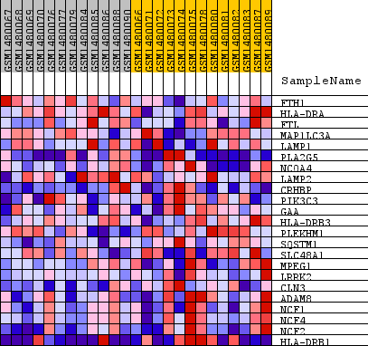
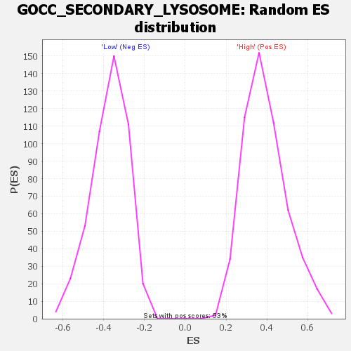

Profile of the Running ES Score & Positions of GeneSet Members on the Rank Ordered List
| Dataset | WG6v3.MRPL3.cls#High_versus_Low.MRPL3.cls#High_versus_Low_repos |
| Phenotype | MRPL3.cls#High_versus_Low_repos |
| Upregulated in class | Low |
| GeneSet | GOCC_SECONDARY_LYSOSOME |
| Enrichment Score (ES) | -0.7247376 |
| Normalized Enrichment Score (NES) | -1.945665 |
| Nominal p-value | 0.0 |
| FDR q-value | 0.018004369 |
| FWER p-Value | 0.187 |
| SYMBOL | TITLE | RANK IN GENE LIST | RANK METRIC SCORE | RUNNING ES | CORE ENRICHMENT | |
|---|---|---|---|---|---|---|
| 1 | FTH1 | FTH1 | 1990 | 0.062 | -0.0646 | No |
| 2 | HLA-DRA | HLA-DRA | 2231 | 0.056 | -0.0428 | No |
| 3 | FTL | FTL | 7231 | 0.007 | -0.2961 | No |
| 4 | MAP1LC3A | MAP1LC3A | 7810 | 0.005 | -0.3229 | No |
| 5 | LAMP1 | LAMP1 | 7935 | 0.004 | -0.3265 | No |
| 6 | PLA2G5 | PLA2G5 | 8591 | 0.002 | -0.3590 | No |
| 7 | NCOA4 | NCOA4 | 8976 | 0.001 | -0.3784 | No |
| 8 | LAMP2 | LAMP2 | 9943 | -0.003 | -0.4266 | No |
| 9 | CRHBP | CRHBP | 10720 | -0.005 | -0.4633 | No |
| 10 | PIK3C3 | PIK3C3 | 13884 | -0.021 | -0.6133 | No |
| 11 | GAA | GAA | 14747 | -0.028 | -0.6406 | No |
| 12 | HLA-DRB3 | HLA-DRB3 | 16142 | -0.042 | -0.6865 | Yes |
| 13 | PLEKHM1 | PLEKHM1 | 16437 | -0.047 | -0.6730 | Yes |
| 14 | SQSTM1 | SQSTM1 | 17441 | -0.063 | -0.6860 | Yes |
| 15 | SLC48A1 | SLC48A1 | 18052 | -0.080 | -0.6687 | Yes |
| 16 | MPEG1 | MPEG1 | 18254 | -0.086 | -0.6263 | Yes |
| 17 | LRRK2 | LRRK2 | 18320 | -0.089 | -0.5753 | Yes |
| 18 | CLN3 | CLN3 | 18376 | -0.092 | -0.5221 | Yes |
| 19 | ADAM8 | ADAM8 | 19033 | -0.138 | -0.4713 | Yes |
| 20 | NCF1 | NCF1 | 19078 | -0.145 | -0.3852 | Yes |
| 21 | NCF4 | NCF4 | 19159 | -0.154 | -0.2951 | Yes |
| 22 | NCF2 | NCF2 | 19373 | -0.220 | -0.1713 | Yes |
| 23 | HLA-DRB1 | HLA-DRB1 | 19416 | -0.284 | 0.0003 | Yes |

